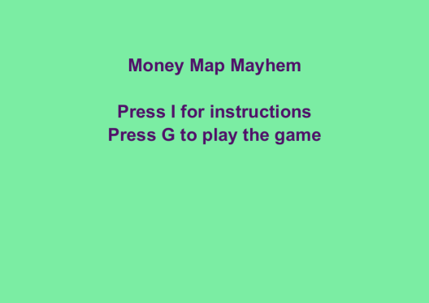
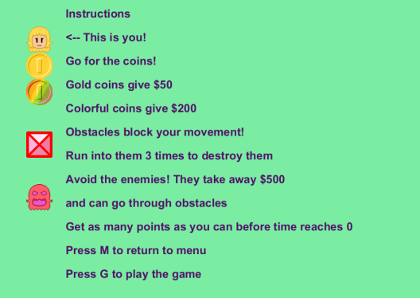
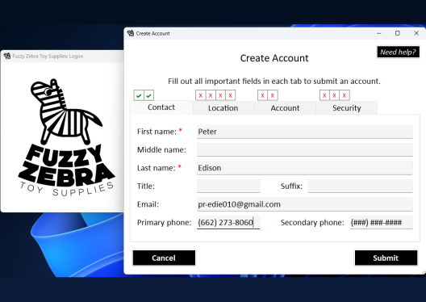
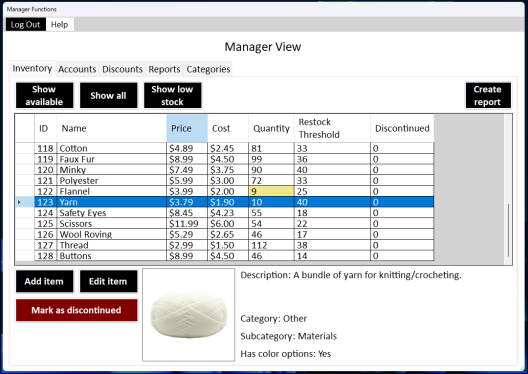
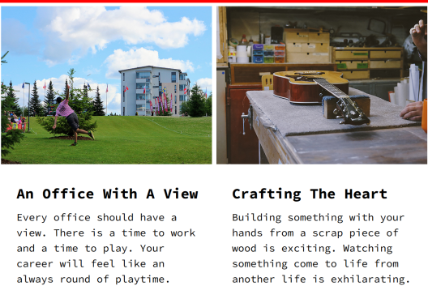
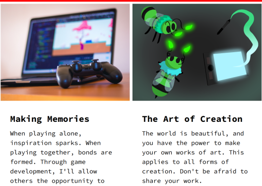

College Projects
Texas State Technical College has set me up for success. Over the course of three years, I created databases, websites, projects in Unity, Windows Forms, and many other miscellaneous programs. Without a doubt, I've made massive improvements between the day I started and the day I graduated. See for yourself by viewing the five projects below; the ones I am most eager to show!
Money Map Mayhem


A simple game made with Java where you run around a small map while
collecting coins and avoiding enemies. Get as high a score as you can
before time runs out.
Despite completing about 8 different assignments that involved making a
game, Money Map Mayhem was the only one that had room for creativity.
All the other game assignments had me take notes and repeat what was in
them nearly verbatim. Instead, this one started with a very basic base
(provided by
Learn Code By Gaming), and the idea was to add new things to meet a list of various
requirements. Not all requirements had to be met, only enough for 100
points.
In the end, I met enough requirements for 155 points. Every minute I
spent on Money Map Mayhem was an absolute blast, so I just kept going,
trying to think of new ideas that would turn this game into something
frantic, something fun, something I would want to play!
I'd especially like to point out the interaction between red ghosts and
blocks. Ghosts can go right through them, yet the player cannot. The
tricky thing is that if a block is not damaged, the ghosts will be
completely hidden behind it. So even if you'd rather not take the time
to destroy a block, it may still help to damage it at least once. That
way, the ghosts can't hide behind them and catch you by surprise. It's a
small game design choice I made to compliment the quick split-second
decision making that occurs during gameplay.
Fuzzy Zebra Toy Supplies
A Windows Forms application made with C# that functions as a shop for a
made-up company called “Fuzzy Zebra Toy Supplies”. Place orders for
items that will help you create your own plushies. Log in as a manager
to keep the store running by monitoring and editing data.
Plenty of assignments were a shop of some kind, but none of them were as
ambitious and polished as the Fuzzy Zebra Toy Supplies online store. Not
only was this the biggest project (with 5 classes and 12 forms), it also
had higher expectations. No more proof of concepts; now the code had to
be thoughtfully created to prevent even the smallest of bugs from
occurring. Beyond that, it later had to be optimized!


In all honesty, plenty of credit goes to C# and Winforms for how
reliable they are. Often did I implement controls I had not used before,
and learning how to use them was surprisingly easy. The biggest
challenge was trying to get data to communicate between multiple forms
and classes, especially since I had to account for some inventory items
being available in different colors.
No project could have been more worthy of being the last one before I
graduated. I remember underestimating the amount of time it would take
to finish even a few steps on my to-do list. In that regard, a project
like this is nothing short of humbling. Yet, all those hours spent on
refinement is why I consider this my best college work!
Tranquil Buzz Travels
An application made with Java where you can browse and book lodgings.
Guests can rent lodgings without logging in. Employees can edit the
available lodgings.
Here, we have another form that functions like a shop. I consider this
to be the second best of all the shop projects, even if it is rough
around the edges. What makes it so impressive is the test of patience I
endured trying to create anything with Java Swing. Working with Java
Swing is the most frustrating experience I have ever had with coding.
Having to manually code every control was bad enough, but it became way
more difficult because the notes hardly covered anything that the
assignment asked for. Java Swing is too complex a topic to expect this
much work from only the basics. I spent days looking through Oracle to
understand every class myself, sometimes to discover that a class
doesn't have a particular method I need to get my plans to work.
However, with enough determination, I managed to get the project to
function just fine.
Eventually, the last part of the project involved optimization. After
cleaning up the code and placing threads wherever necessary, I felt a
certain joy seeing the lodging images load in one-by-one. Finally, I
could look at this project with a sense of pride. Despite wrestling with
the code for days, Tranquil Buzz Travels didn't leave me emptyhanded. It
ended strong and gave me a greater understanding of classes and objects.
Family Pets
A mockup website about various pets throughout my family's history. Only
three buttons in the navigation section link to pages because the
website's true intention was to practice JavaScript.
Since this was part of the second web development course, I had already
made a couple of websites without any JavaScript. Although I couldn't
give this project any stunning functionality, I did have the skills to
make a stylish first page. My instructor was very impressed!


The DOM page is completely different from the rest. It was for a lesson
on manipulating the elements within a website using only JavaScript.
Images were replaced, text was rewritten, and the style was changed from
the base we were given. Memories flooded back as I reviewed my work;
memories of how tricky it was to pull off these basic concepts. It gave
me a sense of how far I've come as a programmer.
By the time I made this website, I had little experience with
object-oriented programming. Funny how I can look at the code now and
already understand it despite not messing with JavaScript for a couple
of years.
Sight Seeker Society
A mockup website for users to post art online and share their visual
creations with the world.
This was the final assignment of the first web development course. As
such, it features no JavaScript, just 5 pages to test my capabilities
with HTML and CSS. While I don't have much to say about it, I am proud
of the way it looks.